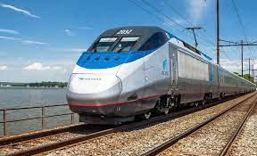
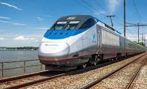
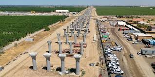
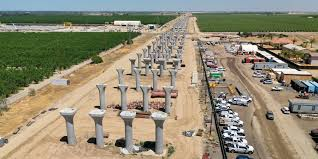
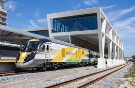
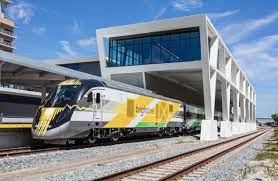
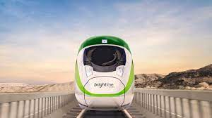
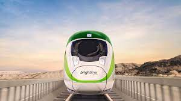
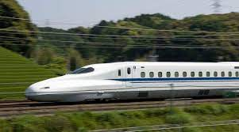
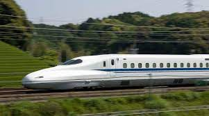

Immense Lack of Political Will
Over the past few decades, countries across the world have greatly expanded funding and construction of passenger rail lines and high-speed lines, with the most notable player being China, building a mind boggling length of high-speed rail in a very short amount of time. While these big projects happen across the world, the United States Government has had no appetite to provide funding or support for states who are interesting in building high-speed rail. This lack of political will from our government results in an insane amount of difficulty to propose and plan new projects or developments of high-speed rail.
Changing Tides
With the passage of the Bipartisan Infrastructure Bill, there is now a significant increase in the funding for rail projects across the country. This investment comes at a very crucial time as the country begins to look towards more climate sustainability and works towards remedying the planning mistakes of the past. While this funding is no where near enough for the country to develop robust high-speed rail networks, it is a start and hints towards the changing support of the government in regards to mass transit projects.
Projects in Different Stages
Although the United States has only one active high-speed rail corridor by definition, there are many different projects in various stages of development across the country. This is the beginning of the United States constructing transportation that is already These projects vary in scope and size but will have notable impacts on their respective regions once they have been completed.
 

The Northeast Corridor has been given substantial funding to improve the physical condition of the tracks and add tracks to reduce bottlenecks that leave trains delayed and keep them moving slower than they are capable of.
 

California's High-Speed Rail Line has been riddled with problems, dealing with an out of control budget and a very slow and consistently delayed construction process. When complete, San Francisco and Los Angeles will be connnected by a 2 hour and 40 minute train ride.
 

Florida's Brightline train, currently connecting Miami and Fort Lauderdale to Orlando with plans to extend to Tampa has taken a unique development by using and buying existing tracks to provide commuters an alternative to driving. It is estimated to take 3 hours to travel from Orlando to Miami when fully completed, which is faster than the average drive time.
 

Brightline West, originating with its counterpart in Florida, aims to connect Las Vegas to Los Angeles, providing an alternative to driving on this high demand corridor. Construction of the line is expected to begin in early 2023 pending authorization from the appropriate permitting agencies.
 

Texas is working on developing a high-speed line between Houston and Dallas/Fort Worth using technology based on the Central Japanese Railway Company. The new line would connect the two cities in under 90 minutes, providing a vital transportation network between two of the states largest metro areas. Construction is expected to begin in the near future, completion could come as early as 2026.